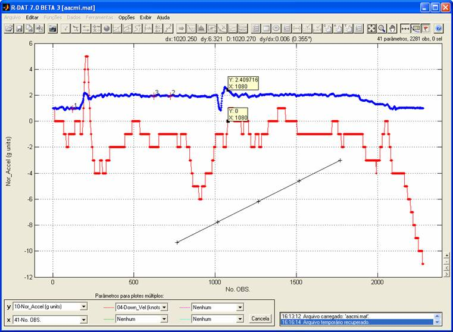

| Menu
Editar |
|
Definição
de Cor
O R_DAT possui
duas definições gerais de cor: Branco e
Preto.
Clique no menu “Editar ►
Definição de cor ... ► [opção desejada]”.
Definição
“Branco”
- Gráficos e fundos
de objetos de controle ficam brancos;
- Fundo da janela e
botões ficam com a cor “default” do Windows;
- Textos e grades
ficam pretos.

Definição
“Preto”
- Gráficos e fundos
de objetos de controle ficam pretos;
- Fundo da janela e
botões ficam pretos;
- Textos e grades
ficam brancos;
- Barra de menus e
barra de ferramentas ficam com a cor default do Windows.
Após alterar a
definição de cor, é possível alterar a cor de
fundo dos gráficos isoladamente através da operação “Cor
de fundo”.
A definição
será lembrada pelo R_DAT nas sessões
subsequentes.
|
Nota: As janelas
secundárias, como avisos e confirmações, e as demais janelas do R_DAT
não serão afetadas pela definição de cor “Preto”. |
| |
Cor
de fundo |
Menu
Editar |
|